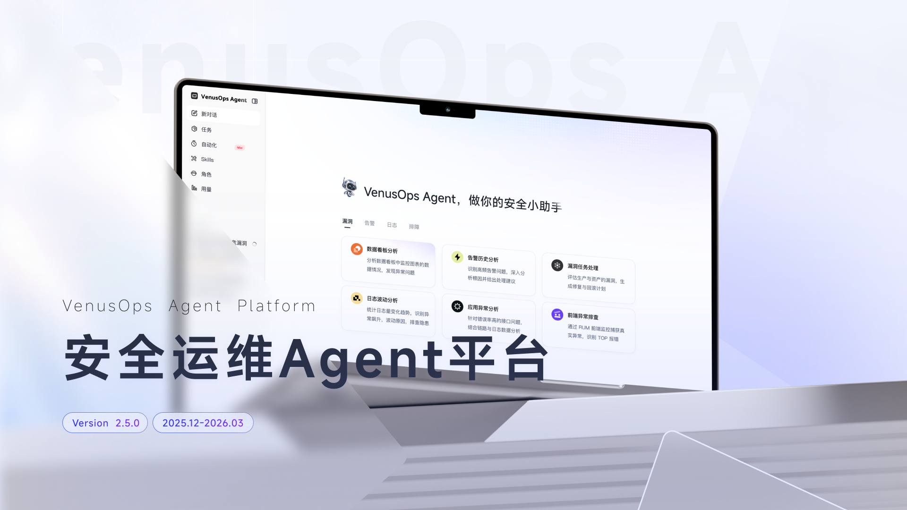
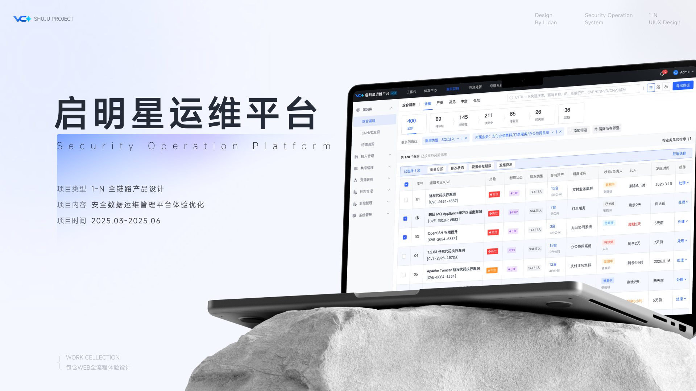
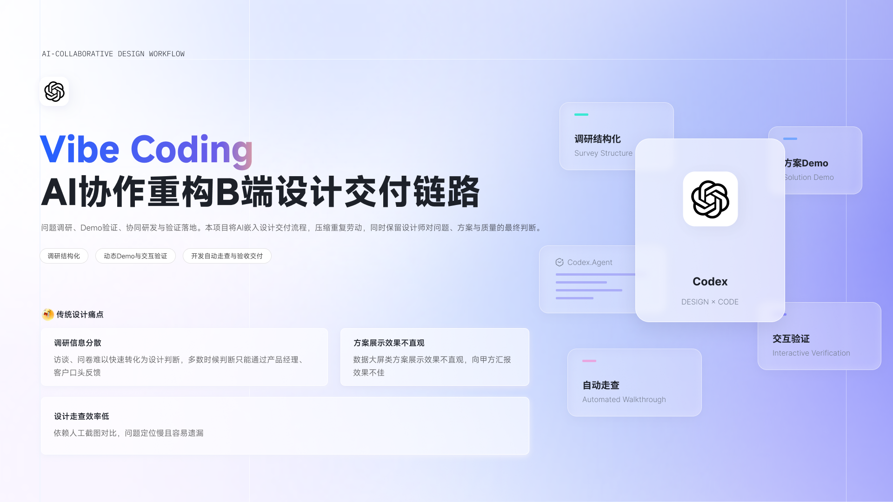

北京启明星辰信息安全技术有限公司
UI 设计师
安全运维 · AI 智能体 · 设计系统
负责复杂业务系统与 AI 平台体验设计，推动设计系统建设，探索 AI 协同交付流程。
经验丰富的 UI/UX 设计师，专注 B 端复杂系统与 AI 产品体验。
以系统思维梳理业务，用设计与 AI 工作流，让想法走向真实产品。
从复杂业务到产品体验，
三个项目，三种实践视角。

让 AI 协作清晰可控
围绕安全数据查询、分析、处置与巡检，重构核心交互，让复杂的人机协同任务更易理解与执行。

让复杂运维清晰有序
负责 1–N 全链路产品设计，梳理站点配置、拓扑与安全监控流程，让运维任务更清晰、操作更高效。

让设计流程高效复用
从调研结构化、动态 Demo 验证到自动走查与设计验收，将设计方法沉淀为可复用的人机协同工作流。
不止于设计稿。
让方法可以体验，让资产可以复用。
在不同业务场景中，
持续拓展设计的深度与边界。
UI 设计师
安全运维 · AI 智能体 · 设计系统
负责复杂业务系统与 AI 平台体验设计，推动设计系统建设，探索 AI 协同交付流程。
UI 设计师
建筑行业软件 · 业务系统设计
参与行业软件与移动产品设计，深入用户场景，推动方案落地与体验优化。